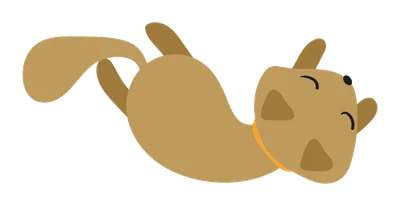

Resposta curta
Para a maioria dos gatos saudáveis, o cat sitting é a melhor opção. O gato continua no próprio território, mantém a rotina e não passa pelo estresse do transporte nem pelo contato com outros animais. O hotel faz mais sentido para gatos que precisam de supervisão 24 horas, como em pós-operatórios ou tratamentos intensivos.
Comparativo: cat sitting x hotel para gatos
| Critério | Cat sitting domiciliar | Hotel para gatos |
|---|---|---|
| Ambiente | A casa do gato, com cheiros e esconderijos conhecidos | Ambiente novo, com sons e cheiros desconhecidos |
| Transporte | Não precisa | Ida e volta de caixa de transporte |
| Rotina | Mantida: mesma comida, mesma caixa de areia, mesmos horários | Adaptada à rotina do hotel |
| Contato com outros animais | Nenhum (só os gatos da casa) | Possível, com risco de doenças contagiosas |
| Atenção individual | Visita dedicada só ao seu gato | Dividida entre os hóspedes |
| Supervisão 24 horas | Não: visitas diárias de cerca de 1 hora | Sim, em geral |
| Atualizações | Foto e vídeo a cada visita pelo WhatsApp | Varia de hotel para hotel |
Quanto custa o cat sitting em Porto Alegre
Na Guria dos Gatos, a diária de cat sitting custa R$ 80, com uma visita de cerca de 1 hora. Inclui alimentação e água fresca, limpeza da caixa de areia, brincadeiras, medicação oral e foto e vídeo pelo WhatsApp a cada visita. Se o gato precisa de medicação injetável, a diária fica R$ 110; com soro subcutâneo, R$ 130 (sempre com prescrição veterinária). A diária cobre até 4 gatos; a partir do 5º, cada gato soma R$ 5 à diária. Antes de começar, fazemos uma visita de apresentação com valor simbólico, revertido ao projeto Miau de Apê.
Diária de cat sitting
R$ 80 / diária
- Cerca de 1 hora de cuidado
- Foto e vídeo pelo WhatsApp
- Medicação oral inclusa
- Contrato e ficha de cuidados
Com injetável: R$ 110/diária · Com soro: R$ 130/diária
Até 4 gatos; + R$ 5 por gato a partir do 5º.
Só precisa de uma visita pontual? Conheça o Cat Care →
Por que a maioria dos gatos prefere ficar em casa
Gatos são animais territoriais. A casa é o lugar onde eles se sentem seguros, e mudanças de ambiente estão entre as maiores fontes de estresse felino. Segundo a seguradora britânica Petplan, sons, cheiros e visões desconhecidos podem ser demais para o gato, e até o trajeto até o hotel já gera estresse.
Um estudo publicado na revista científica Animal Welfare (Kessler & Turner, 1997) acompanhou 140 gatos hospedados em hotéis por até duas semanas. Cerca de dois terços se adaptaram bem, mas para aproximadamente um terço a hospedagem foi uma experiência estressante. O problema é que não dá para saber de antemão em qual grupo o seu gato vai estar.
Na nossa experiência cuidando de centenas de gatos em Porto Alegre, os sinais de estresse mais comuns quando o gato sai de casa são falta de apetite, esconder-se o tempo todo e mudanças no uso da caixa de areia. Em casa, com a rotina preservada, esses sinais são bem mais raros.
Quando o hotel para gatos pode ser a melhor escolha
Ser honesto faz parte do cuidado. Em alguns casos, o hotel é a opção mais segura:
-
Supervisão constante
Gatos em pós-operatório, com doenças que exigem monitoramento 24 horas ou internação.
-
Gatos muito agressivos com estranhos
Se o gato não permite a aproximação de ninguém além do tutor, as visitas em casa ficam difíceis.
-
Casa indisponível
Mudança, reforma ou quando não há como deixar a chave com alguém de confiança.
Como escolher um bom cat sitter
Antes de deixar a chave de casa com alguém, confira se o profissional:
- Faz uma visita de apresentação antes de começar, para conhecer o gato e a casa.
- Assina um contrato de prestação de serviços.
- Preenche uma ficha de cuidados com rotina, alimentação, remédios e contato do veterinário.
- Envia atualizações com foto ou vídeo em todas as visitas.
- Tem experiência com medicamentos e sabe o que fazer numa emergência.
- Tem avaliações públicas de outros tutores, como no Google.
A Guria dos Gatos cumpre os seis itens. Veja como funciona →
Perguntas frequentes
Não recomendamos. Mesmo com comida e água sobrando, ninguém percebe se o gato parar de comer, passar mal ou ficar preso em algum cômodo. Uma visita por dia já garante água fresca, caixa de areia limpa e alguém de olho na saúde dele.
Na maioria dos casos, sim. Gatos tímidos costumam sofrer mais com ambientes novos. Em casa, eles podem se esconder no lugar de sempre enquanto a cat sitter cuida de tudo, respeitando o espaço deles. Para gatos ansiosos, usamos musicoterapia durante as visitas.
Na Guria dos Gatos, a diária de cat sitting custa R$ 80, com uma visita de cerca de 1 hora, foto e vídeo pelo WhatsApp, limpeza da caixa de areia, alimentação e medicação oral incluídas. Se o gato precisa de injetável, a diária fica R$ 110; com soro, R$ 130. A diária cobre até 4 gatos; a partir do 5º, + R$ 5 por gato na diária.
Fontes: Kessler, M. R. & Turner, D. C. (1997). Stress and adaptation of cats (Felis silvestris catus) housed singly, in pairs and in groups in boarding catteries. Animal Welfare, 6, 243–254. · Petplan, “Are catteries stressful for cats?”
